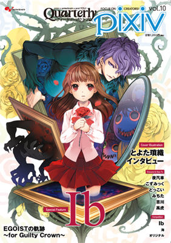

 |
Ib (pronounced "Eeb," similar to “Eve”) is a freeware horror adventure game by kouri made with RPG Maker 2000. The game is focused on exploration and puzzle-solving; there are no battles, but occasionally demands quick reflexes. It's designed to be accessible to all kinds of players.
The game was released in the third quarter of 2012. The game was not that well known at the time, as it was a mere indie game made with the program, RPG Maker 2000. As time passed, more RPG Maker games were created and became more popular among the Japanese indie game fans. This led to Ib becoming more well known by fans of indie games. Thus, Ib was often grouped with those games in fanart, including The Witch's House, Dream Diary, Mad Father, and etc. As this happened, English-speaking indie game fans picked this game up, and translated the game for other English-speakers to play. Once the game became more popular among the Western audience, more unofficial translations in other languages were created, including Chinese, Russian, and Korean. The game, Ib, received much fanart from its fans, and soon after its rise in popularity, merchandise by the creator of the game were created, and people had began selling the game's official merchandise. Fans even created accessories, bookmarks, and etc. based on the game, and uploaded their fanworks on the popular fanart-sharing website, Pixiv. The game had received so much attention from its fans that it had even made it onto the cover of the 10th Volume of the Quarterly Pixiv Magazine. Ib, along with the other indie games at its time, then became somewhat of a spark for the newer RPG Maker games to come, including Irisu Syndrome. |